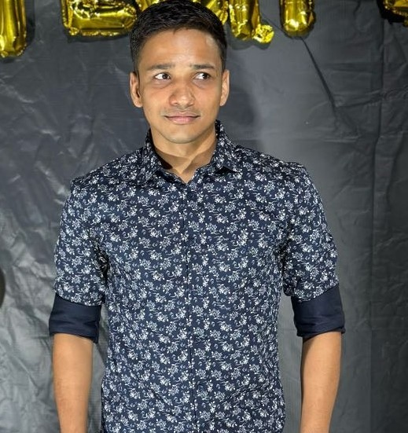

About Me
I am a Machine Learning enthusiast and recent MTech graduate (2021-2023) from DAIICT, Gandhinagar. My studies focused on NLP, Deep Learning, Machine Learning, Recommendation Systems, Computer Vision, and Data Visualization, with a strong foundation in Data Structures and Algorithms.
I have completed projects applying cutting-edge technologies to real-world problems, covering subjects like Statistical Learning, Reinforcement Learning, Natural Language Processing, Computer Vision, and Big Data Analytics during my MTech.
I am actively seeking internship or job opportunities in Machine Learning, Data Science, or Data Analysis. With my strong academic background and practical experience, I can tackle complex problems, analyze data, and derive valuable insights. I am motivated to join a dynamic team, enhance my skills, learn from industry professionals, and contribute effectively to organizational goals.
I have acquired proficiency in several tools and frameworks such as TensorFlow, PyTorch, Scikit-learn, Matplotlib,OpenCV,Keras, and NLTK. My skills in these tools are rated as follows:
- TensorFlow
- PyTorch
- Scikit-learn
- Keras
- NLTK
- SPACY
- NUMPY PANDAS
- Matplotlib
- Tableau
I am proficient in programming languages such as Python, C, JAVA, MATLAB and C++. I have hands-on experience in developing and deploying machine learning models and have contributed to various open-source projects.
Languages
- Python
- C
- JAVA
- MATLAB
- C++
Achievement
Achieved AIR 2068 in GATE 2021.
Links
Projects
Multi Class Classification
A CNN model to classify images of food as chicken_curry,chicken_wings, fried_rice, grilled_salmon, hamburger, ice_cream, pizza, ramen, steak and sushi.
Multi-Class Classification using Transfer Learning
🍽️🔍 In this project, we explore the world of food 🌮🍕🥗 by building a transfer learning-based feature extractor 🧠📸. By leveraging the power of pre-trained models 🚀, we aim to classify 10 different food items with delicious accuracy 📊🍔. Let’s dive into the mouth-watering world of food classification! 🍩🍓🍜
Identifying whether a document is written by a bot or human
This project aims to develop a Natural Language Processing (NLP) system to determine the authenticity of academic papers. With the increasing prevalence of fraudulent and deceptive scholarly publications, it is crucial to establish methods for identifying fake papers.